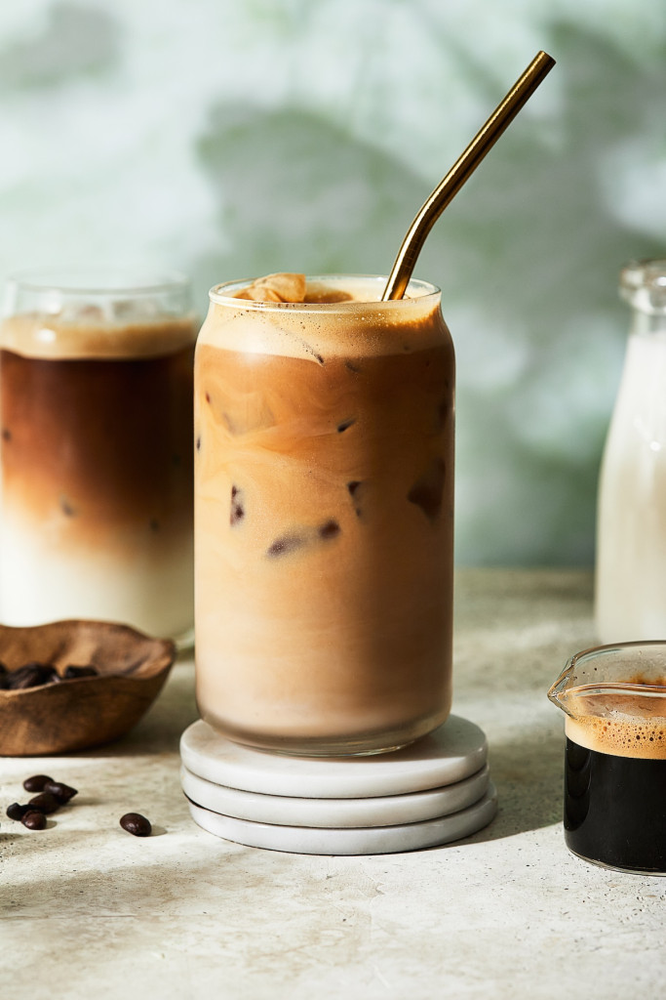

Iced coffee is a coffee beverage served cold. It prepared either by brewing coffee normally and then serving it over ice or in cold milk or by brewing the coffee cold.
In hot brewing, sweeteners and flavoring may be added before cooling, as they dissolve faster. Iced coffee can also be sweetened with pre-dissolved sugar in water.
Ingredient: